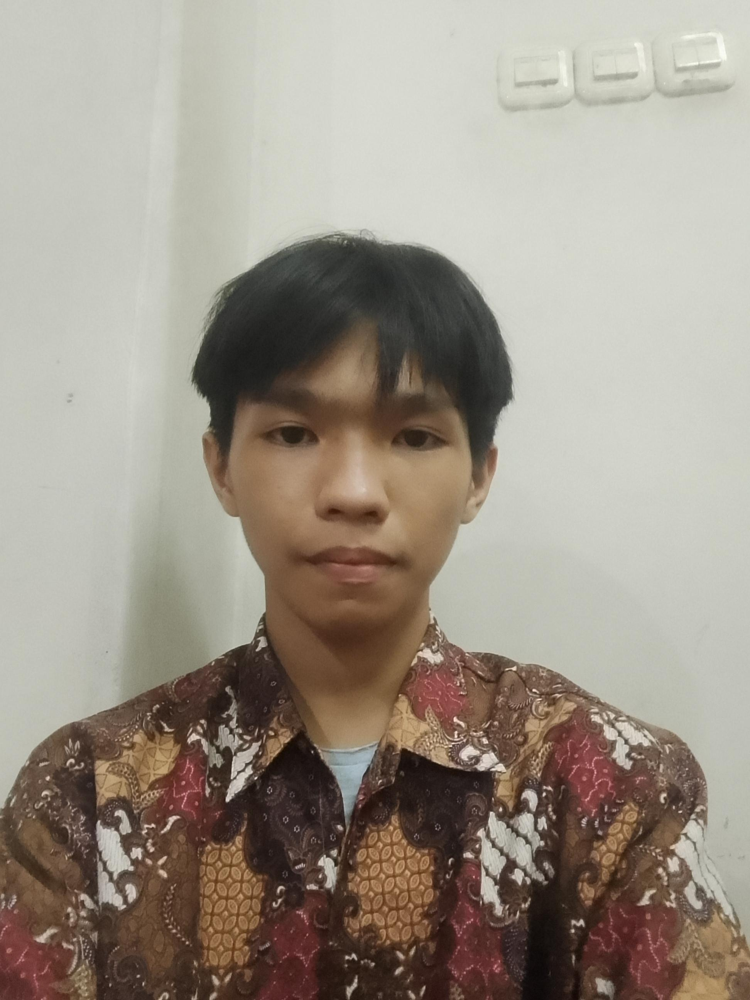

Nhelvin Jhovan Adhresen
Kelas X TKJ 1 - SMK Kristen Immanuel
Halo! Saya Nhelvin. Saya tertarik dengan jaringan komputer dan bagaimana data bisa mengalir dari satu tempat ke tempat lain. Hobi saya adalah bermain game, membaca novel atau komik dan mencoba hal baru di dunia teknologi.
Saya memilih jurusan TKJ karena saya bercita-cita menjadi seorang Network Engineer. Website ini adalah langkah awal saya untuk belajar membuat portofolio yang rapi.